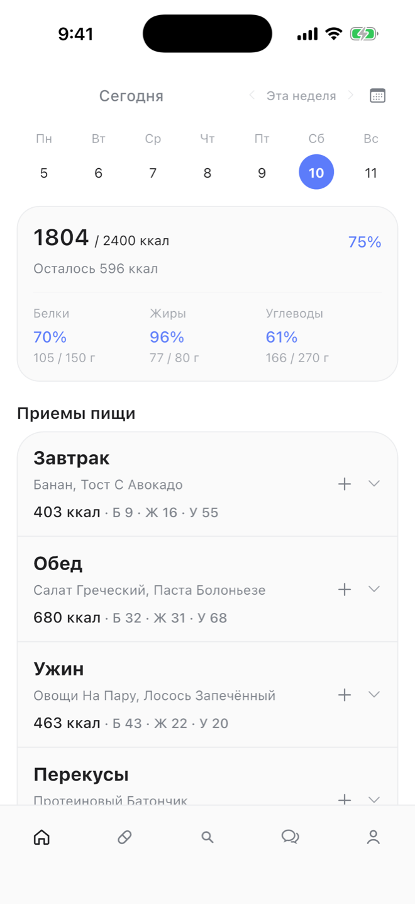
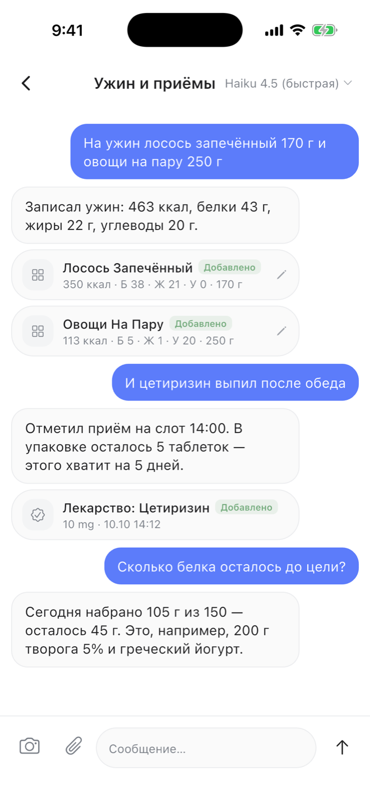
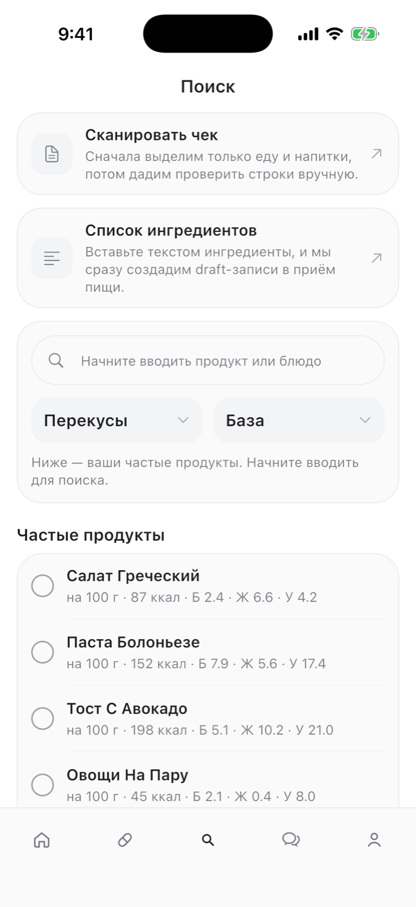
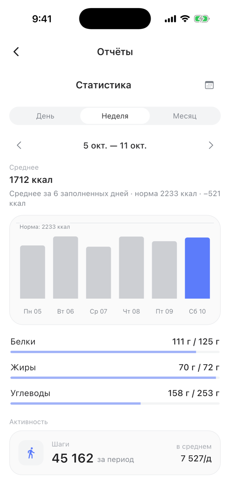
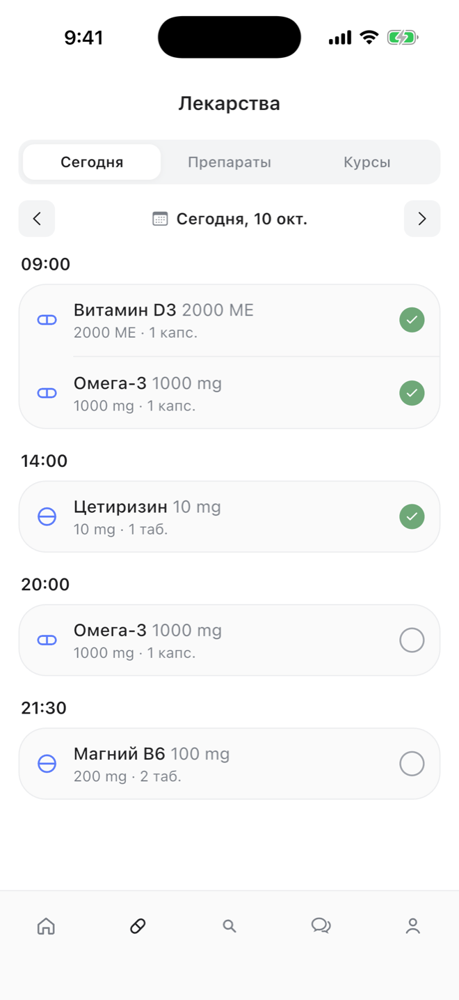
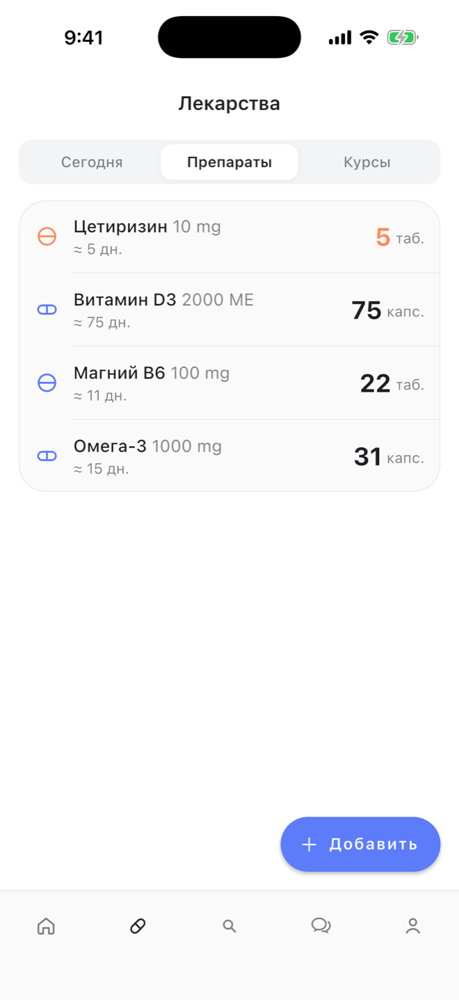
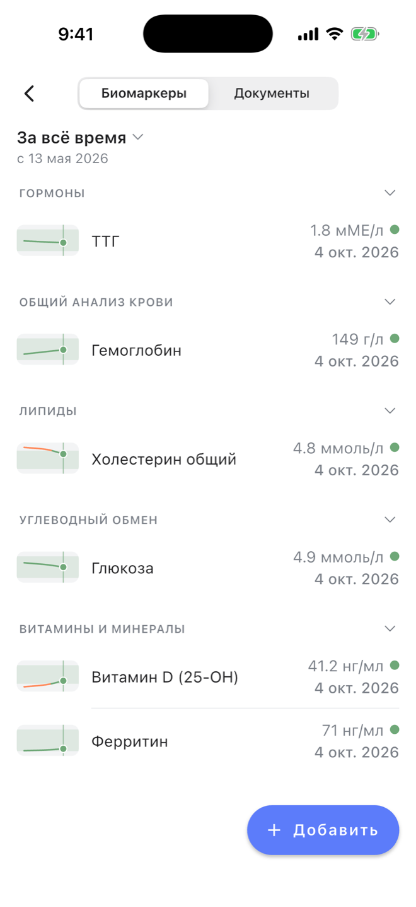
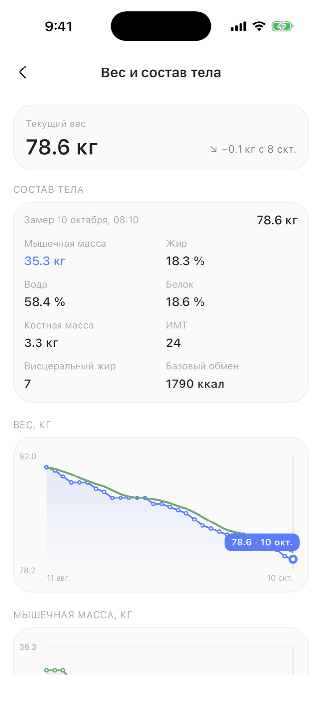
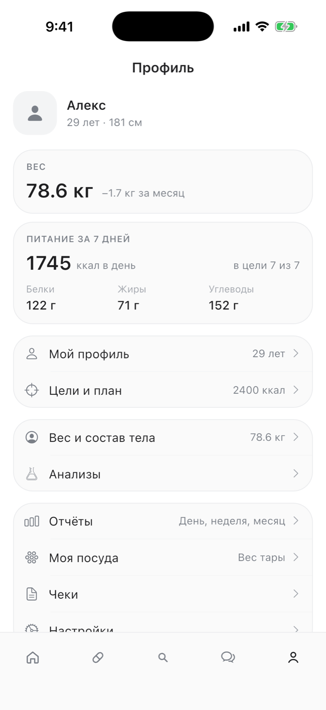

Трекер здоровья, где главный интерфейс — диалог: одна реплика в Telegram-боте или в чате приложения, и ассистент сам добавит ужин, отметит таблетку и посчитает, сколько осталось до цели.


Калории и БЖУ считаются сами, цель на день видна сразу.


Не просто напоминалка — приложение знает, сколько осталось и когда закончится.


Каждый показатель — с нормой и трендом, а не отдельной бумажкой.


Чат на Claude подключён к тем же операциям, что и интерфейс: он создаёт записи, а не пересказывает инструкцию.

Рабочий продукт команды из 5 человек: Telegram-бот, до ~1 000 пользователей, iOS-приложение и бэкенд в продакшене. Приложение в App Store не опубликовано.
| Приложение | Flutter 3 (iOS), виджет и Live Activity на Swift, Apple Health, локальные уведомления, сканер штрихкодов |
|---|---|
| Бэкенд | Python 3.12, FastAPI, SQLAlchemy 2, Pydantic 2, 43 миграции Alembic, Telegram-бот на aiogram, Docker |
| ИИ | Anthropic API: чат с вызовом инструментов, распознавание еды по фото; собственный MCP-сервер |
| Данные | SQLite; склад лекарств как журнал движений, идемпотентные отметки приёмов, время в UTC |
Приложение, бэкенд, MCP-сервер, миграции и тесты — с историей изменений и журналом версий.
Четыре связанных модуля уже работают вместе: питание, лекарства, анализы, тело.
Разбор архитектуры, развёртывание и ответы на вопросы — условия обсуждаются.
Покажем приложение вживую и ответим на вопросы по коду: ViaSiaVia@yandex.ru